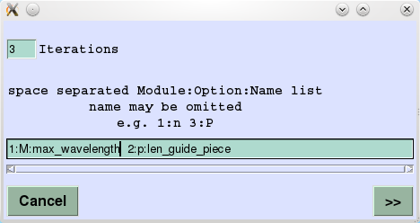
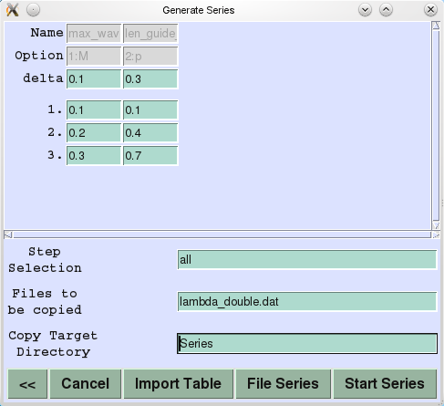

With the item 'Iterations' you give the number of desired simulations.
Then you have to list parameters that are variable for the simulation.
All parameters that are not mentioned here have constant
values, those of the the standard instrument.
To select a variable parameter you identify the module by its number,
and the item by the command option letter. It is possible to name
the parameter here.

Instead of typing the name, you can just click on the item text in the GUI, and the number:option:name triple appears in the list.
In the example list two parameters are separated by white space characters:
1:M:max_wavelength 2:p:len_guide_piecemeans that the parameter defined by the command option -M of the first module will be changed, and it will be given the name max_wavelength on the following window. (If the first module is the 'source' module, this is the maximal wavelength.) Additionally, the parameter defined by the command option -p of the second module will be a variable identified by the name length. (If the second module is the 'guide' module, this is the piece length.)
When the list is complete, you switch to the next window by clicking the '>>' button. Here you'll find a table with as many columns as variable parameters and as many rows as the number of simulations (or iterations) + 3 heading rows for:

The table is to be filled with values then. To make things more convenient, empty cells
of the table are interpreted as having the value of the standard instrument.
You may load the table from a file generated with other means. VITESS accepts
a space, tab, or semicolon separated text file.
You may define a whole column according to:
value_i = value_1 + (i-1)*deltawhere i is the row number. To fill the column, the first value must be given. Then 'delta' has to be set and Enter be pressed, while the cursor is inside the delta cell. If the delta input is empty, pressing Enter repeats the first entry value to the whole column.
To save the results of simulation runs, you give a list of expected
output file names, separated by white space, that shall be copied.
"Copy Target Directory" names a directory, to be created if necessary,
in the example this is the subdirectory Series.
Listed result files are copied to newly named files 's1 _filename.ext', 's2_filename.ext',
etc. in the copy target directory.
Other result files could be overwritten by following simulation runs.
When the table is filled, the series of simulations can be started and executed under GUI control.
If you save the series to a tcl-file, you may execute that tcl file from a tcl shell.
When editing the "Generate Series" parameters, you may easily switch back and forth between GUI windows (click '<<' and '>>') without losing information. It is possible to go back to the first window and extend or change the series. In order to continue your work on the series, maybe after a change of standard instrument, you just choose the menu "File"->"Generate Series" again and continue where you have stopped.
Restrictions:
max. number of modules: 40 max. number of variable parameters: 25 max. number of simulations: 100 max. number of files to be copied: 10